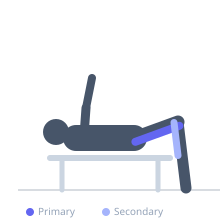

Exercise guide / Seated Leg Curl
Seated Leg Curl
The seated leg curl trains the hamstrings with the hip in a flexed position, which places the biceps femoris long head — a biarticular muscle — in a greater stretch at the hip while simultaneously training it through knee flexion. This combination of hip flexion and knee flexion produces a unique hamstring stimulus that differs from the prone version and may elicit greater elongation and hypertrophic response in the long head.
Primary muscles
biceps femoris long head
biceps femoris short head
semitendinosus
semimembranosus
Secondary muscles
gastrocnemius medial
Equipment
Seated Leg Curl Machine


Starting position
- Sit in the machine with the lower back supported. Position the pad on top of the lower calf near the ankle. Grip the handles. Legs begin at full extension.
Setup
- Adjust the seat so the hip is at approximately 90°. Adjust the pad height so it rests on the lower calf, not behind the knee. The pivot point should align with the knee.
Steps
- Step 1: Seated with back supported and legs extended, grip the handles and brace the core.
- Step 2: Flex the knees by pulling the pad downward and backward under the seat as far as the machine allows.
- Step 3: Hold the peak contraction briefly with the hamstrings fully shortened.
- Step 4: Return to full knee extension under control, resisting the upward pull of the weight stack.
- Step 5: Repeat without letting the weight stack rest between reps.
Coaching cues
- Pull down and back — think of driving your heels toward the glutes
- Keep hips planted — don't let them rise
- Own the eccentric — lower slowly
Breathing
- Exhale as you curl. Inhale as you return to extension.
Range of motion
- Full extension at the start (full hamstring stretch from the hip-flexed position) to maximum knee flexion.
Tempo
- 2-1-3-0
Common mistakes
- Lifting the hips off the seat to assist at the top
- Allowing incomplete extension at the bottom, losing the stretch
- Using too much weight, causing the torso to pitch forward
Safety
- Avoid if experiencing posterior knee pain
- Keep the back flat against the seat — do not lean forward excessively
Training
- strength: 6–10 reps
- hypertrophy: 10–20 reps
- endurance: 15–25 reps
- strength: 3–4 sets
- hypertrophy: 3–5 sets
- endurance: 2–3 sets
- Rest: {'strength': 120, 'hypertrophy': 60, 'endurance': 45}